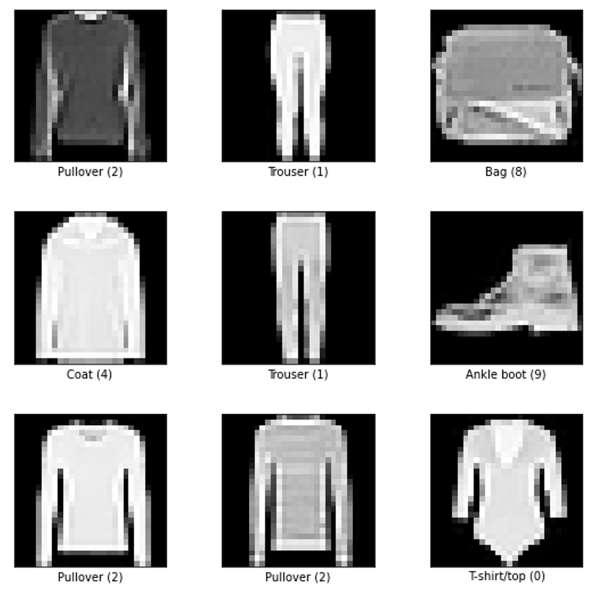

TensorFlow Model Blueprint
TensorFlow has given machine learning practitioners an incredible environment to easily create and run machine learning models. I have taken this opportunity to prepare a summary of how I would make a model with TensorFlow. The example will tackle an image classification problem using CNN with the Fashion MNIST dataset from TensorFlow.
Table of Contents
At a Glance
- Import Libraries - import all the relevant libraries
- Download Data - download the dataset for this notebook
- Inspect the Data - visualize the dataset and make sense of the data
- Prepare the Data - preprocessing the data to ready to use in the model
- Create, Compile, and Run the Model - define the complete model and train the model
- Evaluate the Model - visualize the output and model's performance
- Save the Model - save the successfully trained model
- Load Model - load any model that have been previously created
Import Libraries
These are the common libraries that will be used in almost every model.
Download Data
Before we can download the data, we need to identify where our Data is coming from. The data might come from a single source such as from TensorFlow Dataset, or you might create your own collective dataset from various sources. In this notebook, we will use the dataset from TensorFlow.
TensorFlow Dataset
TensorFlow has an extensive list of Datasets available for users to enter. As a start, you may take a look at all
datasets by calling the function tfds.list_builders().
['abstract_reasoning',
'accentdb',
'aeslc',
'aflw2k3d',
'ag_news_subset',
'ai2_arc',
'ai2_arc_with_ir',
'amazon_us_reviews',
...]
For more datasets visit: TensorFlow Datasets Overview
TensorFlow load()
To easily load the dataset we can use the TensorFlow function tfds.load() and add some argument when needed.
Some of the arguments might be;
split: to split the dataset into sets (train,['train', 'test'],'train[80%:]', ...) see more hereshuffle_files: (bool) to shuffle files between epochsdata_dir: (str) location to save the dataset (Default:~/tensorflow_datasets/)with_info: (bool) to return a metadata (return:tfds.cose.DatasetInfo)
Before downloading the dataset, we should see check what dataset will return when calling it. A full list of all the available datasets on TensorFlow can be found here.
By default, if using tfds.load(), it will return the data as a prefetched dataset of Tensors
(below as (train_ds, test_ds) or ds) and a file that contains the information of the dataset (below as ds_info).
Note
In this example, we will not use prefetched data from tfds.load() because later on, we will use data augmentation
to our data. However, we will need the data info (ds_info) that will be returned from tfds.load() to create a
class names array.
TensorFlow load_data()
Loading data from TensorFlow with load_data() return raw images and labels instead of prefetched data like the
tfds.load() above. This makes it easier and less performance-consuming when using data augmentation. To be able to
augment prefetched data we need to un-fetched it first. To do so with 70,000 images a lot of time and resources be
needed. While knowing this, it makes sense to use raw data. However, we will fetch the data again when the raw data
has been augmented during the data preprocessing.
Kaggle
We won't go into detail about how to download a dataset from Kaggle in this notebook. However, as following are some hints to use Kaggle;
Kaggle Account
- Register for a Kaggle account on kaggle.com
- Go to
Accountin your Kaggle profile and create a new token API
On your Notebook (see detailed information here)
- Install the Kaggle library
- Create an API credential
- Load the dataset
Other Sources
There is a wide range of platforms that have public datasets available to use. The matter of fact is that each platform might have its own method to retrieve that data. The best is to go through their documentation or to look in at the frequently asked questions (FAQ) section.
Inspect the Data
First, let's take a look at the ds_info file and see what kind of information it contains.
>tfds.core.DatasetInfo(
> name='fashion_mnist',
> version=3.0.1,
> description='Fashion-MNIST is a dataset of Zalando's article images consisting of a training set of 60,000 examples and a test set of 10,000 examples. Each example is a 28x28 grayscale image, associated with a label from 10 classes.',
> homepage='https://github.com/zalandoresearch/fashion-mnist',
> features=FeaturesDict({
> 'image': Image(shape=(28, 28, 1), dtype=tf.uint8),
> 'label': ClassLabel(shape=(), dtype=tf.int64, num_classes=10),
> }),
> total_num_examples=70000,
> splits={
> 'test': 10000,
> 'train': 60000,
> },
> supervised_keys=('image', 'label'),
> citation="""@article{DBLP:journals/corr/abs-1708-07747,
> author = {Han Xiao and
> Kashif Rasul and
> Roland Vollgraf},
> title = {Fashion-MNIST: a Novel Image Dataset for Benchmarking Machine Learning
> Algorithms},
> journal = {CoRR},
> volume = {abs/1708.07747},
> year = {2017},
> url = {http://arxiv.org/abs/1708.07747},
> archivePrefix = {arXiv},
> eprint = {1708.07747},
> timestamp = {Mon, 13 Aug 2018 16:47:27 +0200},
> biburl = {https://dblp.org/rec/bib/journals/corr/abs-1708-07747},
> bibsource = {dblp computer science bibliography, https://dblp.org}
> }""",
> redistribution_info=,
>)
The file contains several important information about the dataset such as the description, original dataset repo, features, number of samples, etc.
However, we are particularly interested in variable features. We can see that it stores a ClassLabel() function.
Since TensorFlow hasn't given us the class names of the dataset, we will extract those class names from the features
variable and store them into our class_names variables.
The result of our extraction will be;
['T-shirt/top',
'Trouser',
'Pullover',
'Dress',
'Coat',
'Sandal',
'Shirt',
'Sneaker',
'Bag',
'Ankle boot']
The dataset that we have downloaded should have in total of 70,000 images.
The amount is correct. Let's visualize some images using tfds.show_examples(train_ds, info). By default, it will
display the first 9 images.

As mentioned earlier, when loading the Fashion MNIST dataset by using tfds.load() it will return prefetched data.
Let's see if this holds true.
> <PrefetchDataset element_spec=(TensorSpec(shape=(28, 28, 1), dtype=tf.uint8, name=None), TensorSpec(shape=(), dtype=tf.int64, name=None))>
As we can see, using tf.load(), by default will return prefetch the data which will make it difficult to use data
augmentations. In order to use augmentation with the dataset, we need another workaround.
Prepare the Data
Currently, we have 2 datasets, a training set, and a testing set. Additionally, for the sake of completeness, let's create a validation set.
The validation set will be used to evaluate the model after finishing training the model. It will indicate how well the model will perform on an unseen dataset.
Data Augmentation
Data augmentation is a technique to increase the amount of data by modifying copies of the original data. In other words, if there isn't enough data we can use data augmentation to alter the existing data in a (small) way that doesn't look the same. By making such, we will have a new set of data that doesn't look like the original. The changes are enough to make the model believe that it is a new dataset.
TensorFlow has a build-in function ImageDataGenerator to perform data augmentation. The function has a lot of
functionality, some of them are listed below;
rotation_range: (int) - degree range for randomly rotationsheight_shift_range: (float, 1D-array-like, or int) - randomly shift the image heightwidth_shift_range: (float, 1D-array-like, or int) - randomly shift the image widthshear_range: (float) - shear intensity (angle counter-clockwise)zoom_range: (float or [lower, upper]) - range for random zoomshorizontal_flip: (bool) flip image horizontallyvertical_flip: (bool) flip image vertically
There are still more arguments that can be used. More information here
Let's define data augmentation functions with the above-listed arguments.
Now that we have defined an augmentation function, we can use it to augment the existing data.
Expand Dimension
Let's take a look at the dimension of our dataset.
(48000, 28, 28)
Our datasets haven't the correct dimension yet, We need to change them before we can use them to train our model.
So far we haven't made any changes to our test dataset yet, Let's quickly do that before we move on.
Create, Compile, and Run the Model
Now we have arrived at the step to create a TensorFlow machine learning model. There are 3 steps needed to be done to successfully train the model.
- Create: define what neural layers will exist in the model
- Compile: configure the model
- Fit: to train the model
We can think of it as building a tower. The create step is like building each level of the building. Each level can be representing a neural network layer in our model. The second step, compile, represent how to set the interior of the build, as of how the model functionality is. The fit step is to define what kind of people and how frequently we will allow entering the building.
Create a TensorFlow Model
The first is to define what the model will look like. To create a model we will use the keras.models.Sequential()
function. A Sequential() model can be seen as a container that can contain stacks of layers that are lied on top of
each outer. Each layer represents a neural network layer where each layer can have only one input and an output tensor.
The model that we will create will have several layers, as follows;
Conv2D: for detecting patternMaxPooling2D: is to select the maximum value of its pool and remove the remainingFlatten: is to flatten the input into a single arrayDense: is a fully connected neural network layer.
The model will look like this;
Compile the Model
Compiling a model is to configure the loss function (loss), the optimizer (optimizer), and the metrics**
(metrics).
loss: loss function that will be minimizedoptimizer: how to improve the modelmetrics: list of metrics to be evaluated
Fit (or run) the Model
fit() function is the function to actually run the model by passing the inputs and the number of training epochs into
the model. The model will then start training with the given inputs. We can define what data it will be trained, what
data should be used to validate the training, how much it should be trained, or even use callbacks to perform extra
tasks after the end of a training epoch.
Create a Callback
TensorFlow has a lot of built-in callbacks that can be passed into the training session. However, in this case, we will
use only one, EarlyStopping().
EarlyStopping is used to stop the training in the middle of the session. After the end of every epoch, it will check
if the condition has been met and will stop the training when its observable parameter hasn't been improved after a
certain number of epochs.
Run the Model
We will run the model with the training set train_set and the validation set validation_set to validate the model.
The model will be set to train for 100 epochs. However, we will pass a callback function to stop the model once its
val_loss value hasn't been improved for 5 epochs.
> Epoch 1/100
> 750/750 [==============================] - 15s 20ms/step - loss: 0.5714 - accuracy: 0.7860 - val_loss: 0.4610 - val_accuracy: 0.8188
> Epoch 2/100
> 750/750 [==============================] - 15s 20ms/step - loss: 0.5623 - accuracy: 0.7912 - val_loss: 0.4497 - val_accuracy: 0.8250
> Epoch 3/100
> 750/750 [==============================] - 15s 20ms/step - loss: 0.5605 - accuracy: 0.7913 - val_loss: 0.4085 - val_accuracy: 0.8250
> Epoch 4/100
> 750/750 [==============================] - 15s 20ms/step - loss: 0.5401 - accuracy: 0.7993 - val_loss: 0.4631 - val_accuracy: 0.8062
> Epoch 5/100
> 750/750 [==============================] - 15s 20ms/step - loss: 0.5363 - accuracy: 0.7997 - val_loss: 0.4790 - val_accuracy: 0.8188
> Epoch 6/100
> 750/750 [==============================] - 15s 20ms/step - loss: 0.5243 - accuracy: 0.8037 - val_loss: 0.5222 - val_accuracy: 0.7625
> Epoch 7/100
> 750/750 [==============================] - 15s 20ms/step - loss: 0.5122 - accuracy: 0.8096 - val_loss: 0.3287 - val_accuracy: 0.8750
> Epoch 8/100
> 750/750 [==============================] - 15s 20ms/step - loss: 0.5143 - accuracy: 0.8082 - val_loss: 0.5058 - val_accuracy: 0.8000
> Epoch 9/100
> 750/750 [==============================] - 15s 20ms/step - loss: 0.5030 - accuracy: 0.8139 - val_loss: 0.4172 - val_accuracy: 0.8438
> Epoch 10/100
> 750/750 [==============================] - 15s 20ms/step - loss: 0.4922 - accuracy: 0.8157 - val_loss: 0.4861 - val_accuracy: 0.8188
> Epoch 11/100
> 750/750 [==============================] - 15s 20ms/step - loss: 0.4935 - accuracy: 0.8146 - val_loss: 0.4688 - val_accuracy: 0.8438
> Epoch 12/100
> 750/750 [==============================] - 15s 20ms/step - loss: 0.4863 - accuracy: 0.8183 - val_loss: 0.4359 - val_accuracy: 0.8375
Thanks to the callback function that we have created earlier, it doesn't take 100 epochs to successfully run the model. The model has stopped after 12 epochs.
Evaluate the Model
There is a lot of methods that can be used to evaluate a trained model by using its output. TensorFlow has many built-in functions that can be used depending on what we want to test. We also can use custom methods like plot metrics or charts to help evaluate the output values.
Evaluate()
One of the simplest ways is to use evaluate(). By injecting a dataset, it will return the loss value and metrics
value. Earlier we have prepared a test set named test_set that hasn't been used yet. We will use that set for the
evaluation.
As the value above, when we tested our model with unseen data it has a loss of 0.4618 and an accuracy of 0.8398 which isn't bad for training a model for only 12 epochs.
Plot Loss Curve
When fit() or running the model, the model will return loss and metrics values. We ha set a variable history to
capture those. We can use that variable to plot a chart to have a better look at how the model has performed over the
epochs.
First, let's quickly create a plot function.
Now, let's plot the loos chart
From the charts above, we can see that the model has validation loss has decreased and accuracy has increased rapidly until the sixth epoch. After that, the trend has changed. The performances have been fluctuating. This is a good reason to go back and fine-tune the model.
Save the Model
When finishing training a model we can choose to save the result rather than let the model be deleted. This allows us to get access to the model without having the original code.
The entire model can be saved into 2 formats, SavedModel (a TF 2.X format) or HDF5 (a h5 format). To choose between
those formats we can simply put the respective file format into the name or pass it into the save_format argument.
For more information visit this page.
Load Model
load_model() can be used to load any saved model by model.save(). It takes by default only one argument to indicate
the path of the saved model. More information here